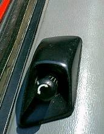
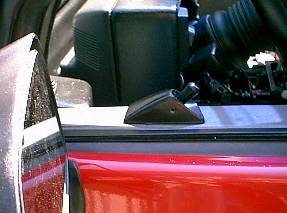
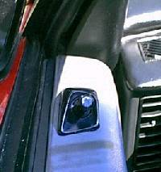
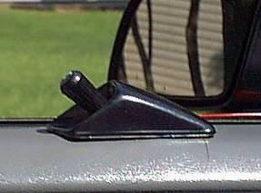

Go Home
Site Map
Go Home
Site Map
By Dave "Monkeyman" Gray
Here is a different p/mirror switch you can use if you currently have manual mirrors or just want a different look to your p/mirror setup. This utilizes a Ford joystick style p/mirror switch located in the same location as the original manual joystick control. Total cost using a used switch: less than $40 plus the cost of p/mirror heads (prices vary on those)

Here's what you'll need:
Removing the door panels.Remove the armrest by removing the two screws at the bottom and the one screw under the square tab at the top. There are two small screws holding the door handle trim plate on. One is under the "Fiero" tab (this would be a good time to buy Oreif's painted tabs) and the other is under the round plug behind the handle. (If you have p/locks, you'll need to remove the wiring that goes to those switches). Use your door panel removal tool to pull out the 6 or 7 "Christmas tree" fasteners around the edges of the panel. (Don't forget the one to the rear of the door handle.) Loosen the setscrew on the manual mirror control and pull the joystick out of the housing. Remove both parts of the inner dew wipe and the rubber weather-strip block at the front of the door. The mirror head can be removed by unbolting the two 10mm nuts from the base of the mirror head. Remove the driver's side mirror being careful to pull the manual cable through the door. (Nothing is attached to the passenger's side mirror head.)
Wiring comes next. You'll need 3 pieces of wire long enough to run from the drivers side door to the passenger side door, 3 pieces about 2 feet long (for the drivers side door), one piece long enough to attach to the drivers door for the ground and one piece long enough to run from the new switch through the door to the fuse box. Either solder the extensions to the Ford wires or use butt connectors. At the ends of the wiring that will go to the drivers side mirror, connect one part of the quick disconnect. Leave the ends of the other wires bare. (It's a good idea to wrap the 3 passenger door wires together. Makes it easier to run through the door and under the dash.) Run the power wire and the passenger door wires through the door and into the cab.Run the passenger wiring under the dash to the passenger side of the car and into the door.(You don't have to remove the dash, but it is helpful if you remove the radio/HVAC/vent surround.)
Back to the drivers door. Cut off the factory end of the wires. Connect the wires to the new quick disconnect.(Follow the wiring list below.) Bolt the p/mirror head onto the door and reinstall the rubber block and inner dew wipe. Be careful to run the mirror wiring in front of the window track. Fasten the ground wire to any bolt on the door. Push the Ford joystick into the stock mirror control mount and tighten the setscrew. Reinstall the door panel.
On to the passenger side. Remove the mirror head. Cut the end off of the wiring and connect the wiring to the quick disconnect. (Make sure the connector is correctly wired!!) Bolt on the p/mirror head. Connect with quick disconnects and reinstall the door panel.
Getting power. Crimp the power wire from the mirror switch to the Add a Circuit lead. Replace a fuse (I used the radio fuse) with the Add a Circuit.
Finish up. Push the Ford p/mirror switch into the stock manual mirror joystick housing. (You will need to manipulate the switch. It fits but it's a tight fit.) Reattach the driver's side door panel and enjoy your new power mirrors.
Here's the wiring list.
|
Ford Switch |
Driver's Mirror |
Passenger's Mirror |
|
Black is Ground |
||
|
Green/yellow to 12V+ (power) |
||
|
White |
Green + White (both) |
|
|
Purple |
Yellow |
|
|
Green |
Blue |
|
|
Yellow |
Green + White (both) |
|
|
Red |
Blue |
|
|
Blue |
Yellow |
Here are some pic's of the finished switch.



Notes:
I found my Ford switch at the local bone yard for less than $10. If you can't find one, Ford still sells them, but without the wiring for around $40. The wiring is about $200 since it includes the entire harness for the car.
Double check to be sure the polarity is correct on the driver's door.
If you currently have p/mirrors and can't find a non-p/mirror door panel, you can cut the hole in the top of the door (what I did as I have the bottoms of the doors covered in vinyl). Be very careful you don't cut too much. Cut small. You can always go back and trim up.
I really like this idea. For people thinking of converting to power mirrors it solves the question of what to do with the old manual control. (Especially if the door skins you have are already nice looking ones.) I think it looks better than the OE switch and it's less likely to get junk spilled into it.
Radio Shack and other places have multi-conductor "rainbow" wire that would work well for this project. It's commonly used for installing taillights in trailers. Each wire in the strip is a different color.
Another way to get the wires across the dash is to pull both speakers. You can use a coat hanger to reach across and pull the wires thru. I used that trick to install the low mount courtesy lights under the dash.
For those who haven't heard of them, "Add a Circuit" is a part that clips in an existing fuse location. It allows you to connect to the fuse box without tools. Make sure the Add a Circuit stuff is tied up so that it won't catch on anything.
An advantage of using the Radio circuit is that it's only on with the key. That helps keep kids from playing with the mirrors when you aren't looking. (The CTSY/LID fuse that powers the OE setup is hot all the time.)